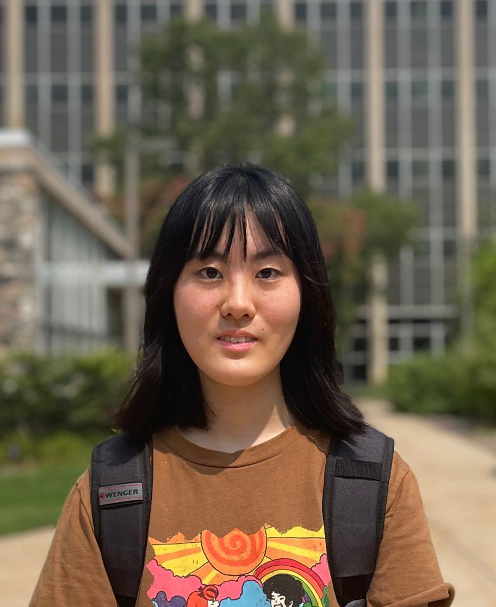
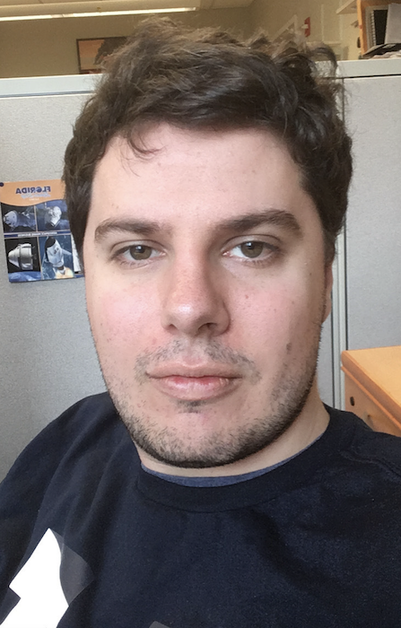
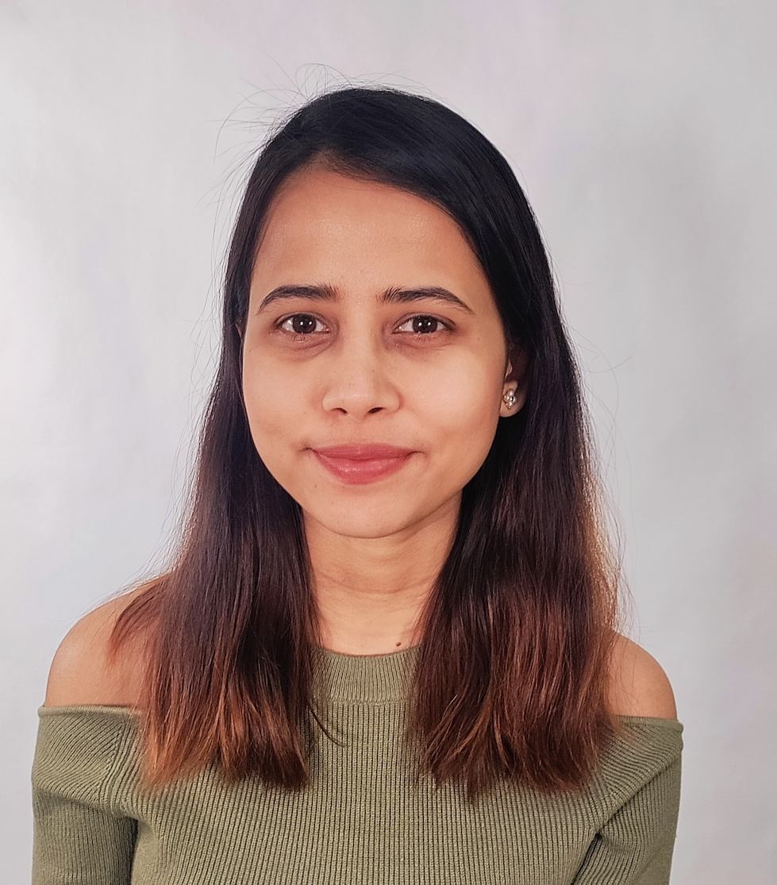
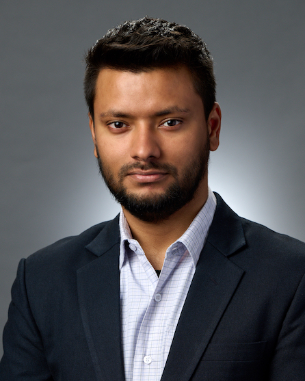
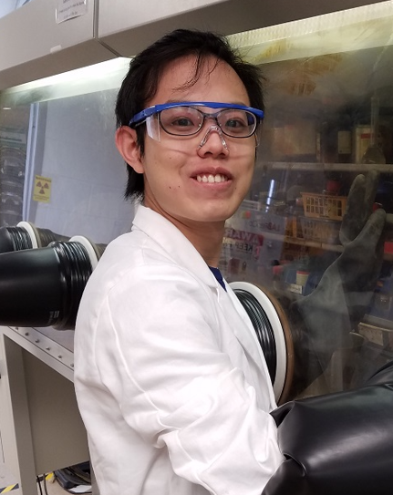

Bin Chen, PhD
Principal Investigator, Professor (CV)
Dept. of Pediatrics and Human Development
Dept. of Pharmacology and Toxicology
Dept. of Computer Science and Engineering (adjunct)
Dept. of Epidemiology and Biostatistics (adjunct)
Dept. of Medicine (adjunct)
Bin was recruited to MSU through the Global Impact Initiative. Before joining MSU, he was a faculty member (instructor, then assistant professor) at UCSF for three years. Bin trained as a chemist in college, worked as a software engineer before graduate school, trained as a chem/bioinformatician in graduate school, and worked as a computational scientist at Novartis, Pfizer, and Merck. He received his PhD in informatics from Indiana University Bloomington and completed his postdoctoral training in Dr. Atul Butte's lab at Stanford University. Bin co-founded DahShu, a nonprofit organization that promotes research and education in data science. As a PI, he has received more than $7 million in research funding. He has also contributed to a number of large grants (e.g., P01 and U24) as a co-investigator. On weekends, Bin plays soccer or coaches kids' soccer.
Email Google Scholar LinkedIn GitHub Twitter
Ruoqiao Chen, BS
BMS PhD student (2021-)
Ruoqiao received her BS in Medical Science from Huazhong University of Science and Technology in China. Her current research focuses on developing machine learning models to predict surface protein expression and building foundation models for drug discovery.
Email
Dmitry Leshchiner, MD
Postdoctoral scholar (2022-)
Dmitry received his MD from I.M. Sechenov First Moscow State Medical University and spent a couple of years at Harvard Medical School as a research associate before starting postdoctoral training at Boston College in 2020. In 2022, he joined the Chen Lab and the Horibata Lab. He is interested in using computational tools to discover novel therapeutics.
Email
Nabasmita Talukdar, MS
PhD student in Biostatistics (2022-)
Nabas received her MS in Statistics from the University of Delhi in India. She is interested in using real-world data to discover better therapeutics.
Email
Shubham Koirala, BS
PhD student in Genetics and Genome Sciences (2024-)
Shubham received his BS in Biotechnology from Kathmandu University in Nepal. He is interested in leveraging machine learning and large-scale transcriptomics to discover new biomarkers for pediatric cancers.
Email
Linqing Mo, MS
PhD student in Computer Science (2024-), co-advised with Prof. Jiayu Zhou
Linqing received his BS in Chemistry from the University of Science and Technology of China and his MS in both Chemistry and Data Science from Michigan State University. He is interested in representation learning for drug discovery.
EmailLingxiao Li, MS
PhD student in Computer Science (2024-), advised by Prof. Jiayu Zhou
Lingxiao received his MS in Computer Science from Boston University. He collaborates closely with the lab on multimodal generative AI for drug discovery.
EmailZolt Palmer, BS
PhD student in Biochemistry and Molecular Biology (2025-)
Zolt received his BS from Grand Valley State University (GVSU). He is interested in systems-based drug discovery.
EmailJoin us
We always welcome highly motivated trainees. Postdoc candidates, please send your CV and research interests to Dr. Chen. Graduate students, depending on your interests and background, please apply through the BioMolecular Science program, the Genetics and Genome Sciences program, the Biostatistics program, or the Computer Science program. Feel free to contact Dr. Chen if you plan to apply.
The Chen Lab has a tradition of hosting high school summer interns every year. If you are interested, please contact Dr. Chen before April. We occasionally recruit undergraduate and medical students as well.
Before applying, all trainees should have some experience with programming (R and Python are preferred) and statistics. Our Resources page lists some great places to learn programming and statistics.
Alumni
| Xiaodan Zhang | Data science specialist, 2022-2026 | Data scientist at Bronto Therapeutics |
| Dimitri Joseph | DO/PhD student, 2020-2026 | Returned to medical school |
| Rama Shankar | Postdoc and K99 fellow, 2018-2026 | Assistant professor at Loyola University Chicago |
| Shreya Paithankar | Lab assistant, 2018-2025 | Applying to PhD programs |
| Sardar Mehtab Bin Murtaza | CS/Chemistry undergraduate, 2023-2024 | CS PhD student at UC Merced |
| Aakash Dave | CHM medical student, 2023-2024 | Medical student at CHM, MSU |
| Han Meng | CS MS student, 2021-2024 | CS PhD student at William & Mary |
| Jing Xing | Postdoc, 2018-2022 | Young PI at Shanghai Institute of Materia Medica, Chinese Academy of Sciences |
| Jeremy Haskins | Part-time technician, 2020-2022 | Senior scientist at Altay Therapeutics |
| Mengying Sun | CS PhD student, 2019-2022, co-advised by Prof. Jiayu Zhou | Data scientist at Facebook (Meta) |
| Ke Liu | Postdoc, 2017-2021; research assistant professor, 2021-2022 | Assistant professor and Qilu Scholar at Shandong University |
| Eugene Chekalin | Postdoc, 2019-2021 | Senior computational biologist at Illumina |
| Austin VanVelsen | Medical student, 2020-2021 | Medical student at CHM, MSU |
| Tyler VanVelsen | Medical student, 2020-2021 | Medical student at CHM, MSU |
| Jeanne Yang | Summer intern, 2021 | Undergraduate at UM |
| Shan-Ju Yeh | Visiting scholar, 2019-2020 | PhD student, then professor at National Tsing Hua University, Taiwan |
| Christopher Chang | Capstone student, 2019-2020 | Medical student at COM |
| Krista Young | Capstone student, 2019-2020 | Medical student at COM |
| Xiangyu Chen | High school summer intern, 2020 | East Grand Rapids High School, admitted to UPenn |
| Yingying Wu | Postdoc, 2019 | Postdoc at Harvard, then assistant professor at the University of Houston |
| Rae Felismino | Capstone student, 2019 | Medical student at COM |
| Cathy Lee | Capstone student, 2019 | Medical student at COM |
| Suchir Gupta | High school summer intern, 2019 | Grand Rapids Central High School, then admitted to UM |
| Billy Zeng | UCSF medical student, 2017-2019 | UCSF medical student |
| Albert Jiao | Medical student, 2018 | Matched into radiology at Harvard |
| Kasim Fassia | Medical student, 2018 | Medical student at MSU |
| Patrick Newbury, MD | Postdoc, 2018-2019 | Radiation oncology resident at the University of Oklahoma |
| Anthony Sciarini | Intern from GVSU, summer and fall 2018 | GVSU undergraduate |
| Keith Schmitt | Intern from GVSU, summer and fall 2018 | GVSU undergraduate |
| Anita Wen | Summer intern from UC Davis, 2018 | UC Davis |
| Before we moved to MSU in 2018 | ||
| Jordan Spatz | Medical student | UCSF |
| Michael F. Sharpnack | Medical student, volunteer | Ohio State University |
| Reuben Sarwal | Summer intern | Undergraduate, UC Berkeley |
| Tanisha Joshi | Summer intern | High school |
| Jane Wei | Summer intern | Undergraduate, Cornell University |
| Rachel (Menghua) Wu | Summer intern | High school, accepted into MIT |
| Charles Pei | Summer intern, co-mentored by Marina Sirota | High school, accepted into Harvard |